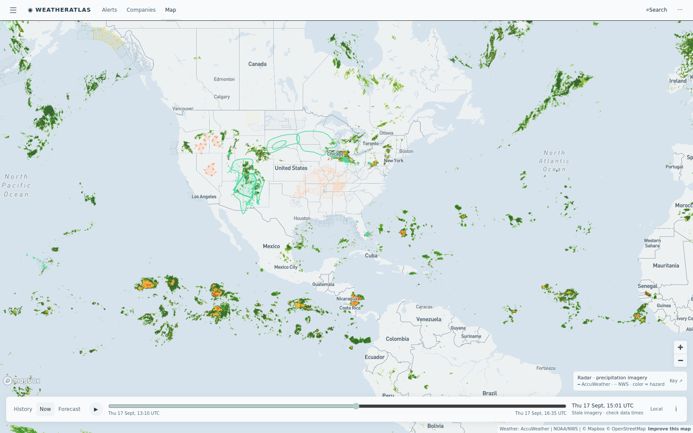

Daily severe-weather intelligence for LNG, refining, offshore, and terminal operators.

Live radar + alerts, 17 Sept 14:30 UTC. No tropical cyclones in any basin. The outlined rain corridors carry today's footprint: flash-flood flags across the Midwest refining corridor (Whiting-area advisories) and Colorado Plateau gas fields, plus Gulf Coast afternoon convection. Interactive radar + hurricane tracker: accuweather.taborlin.co.
| System | Status | Energy-asset impact |
|---|---|---|
| Atlantic / Gulf / Caribbean | QUIET | Cyclone-free a 7th straight day; no tropical cyclones anywhere per NHC — no development signal this week |
| East Pacific disturbance (SW of Baja) | 70% / 7-DAY | Tropical depression likely this weekend or early next week, tracking west over open water — ECA LNG and Pacific tanker lanes on watch, no mainland threat signal |
| Midwest flood regime | ACTIVE | Flash-flood advisories live across the Lake Michigan refining corridor (Whiting area) — barge loading, rail product moves, and yard drainage exposed; heavy-rail corridors face washout risk |
| Colorado Plateau rain regime | ACTIVE | NWS flood watches + AccuWeather flash-flood flags across Piceance/San Juan gas fields (Doe Canyon, Ignacio Blanco, Mamm Creek corridors) — pad access, crew moves, and haul roads at washout risk |
| Gulf Coast convective afternoon | BUILDING | Two t-storm windows (midday + mid-afternoon) flagged on enterprise hourly across the Sabine-Neches and Calcasieu refining corridors, stacking on 96°F heat — lightning stand-down timing is today's call |
| Australian cyclone pre-season | 6 WEEKS | Season opens Nov 1; east-coast LNG berths currently in a clean dry window — the pre-season runway is when forecast stacks get proven before the first named system |
Same hours, same coordinates (Sabine-Neches refining corridor, 29.93°N 93.93°W, this afternoon local time), two very different planning answers:
Two t-storm windows (51%) + 96°F heat today vs a flat 0% "clear" on free data — the stand-down hours are only visible on enterprise hourly.
Live brief →Same story 100 miles east: t-storm windows flagged midday and mid-afternoon on enterprise hourly while free data reads 0% all day.
Live brief →AccuWeather flash-flood flags live across Piceance/San Juan gas fields while NWS county watches lag hours behind — pad access and crew moves are the exposure.
Atlas live board →Asset-pinned AccuWeather + NWS alert board with lightning feed — the same data powering these briefs.
accuweather.taborlin.co →